01
Gamified Exercise Experience
Children complete rehabilitation exercises through interactive challenges, rewards, badges, and progression systems.
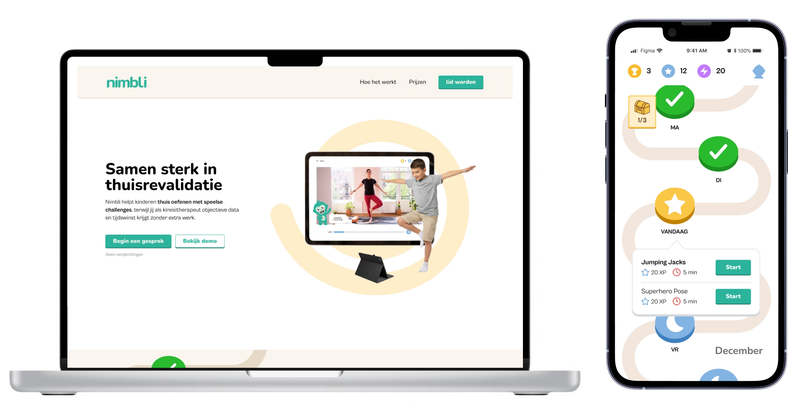
Nimbli
Nimbli was developed as a bachelor thesis project addressing a common challenge in pediatric rehabilitation: children often lose motivation when they have to continue exercises at home. The platform combines gamification, AI-powered pose detection and progress tracking to help children stay engaged while providing parents and physiotherapists with better visibility into the rehabilitation process.
Children often struggle to stay motivated when performing physiotherapy exercises at home. Without the encouragement of a therapist, exercises quickly become repetitive and feel like an obligation. This leads to low adherence rates, slower recovery, and limited visibility for parents and physiotherapists regarding a child's progress. Research shows that only about half of families consistently follow home exercise programs.
To better understand the problem, we conducted extensive research including:
The findings revealed three recurring themes:
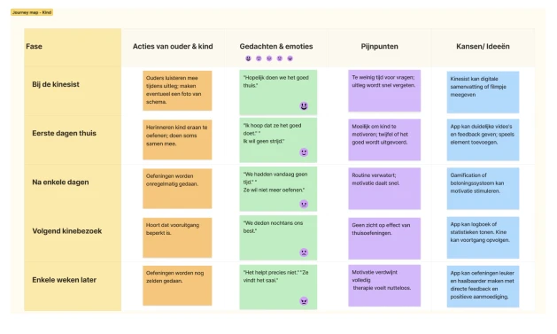
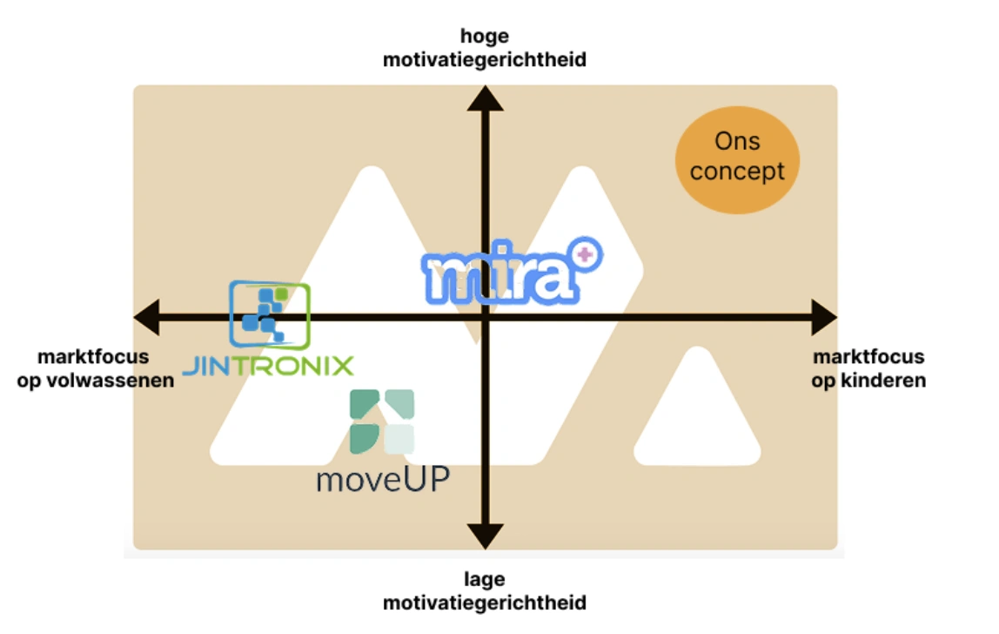
Research revealed that the biggest challenge wasn't performing the exercises themselves, but maintaining motivation between physiotherapy sessions. Children often relied on parental encouragement, while physiotherapists had little visibility into what happened at home. This insight shifted the focus from exercise management towards motivation, engagement and progress visibility.
Based on our research findings, we translated the main user needs into a structured product strategy. Since children, parents and physiotherapists all interact with the rehabilitation process differently, it was essential to define which features would deliver the most value to each stakeholder.
A MoSCoW prioritization workshop helped determine which features were essential for the first version of the platform and which could be introduced later.
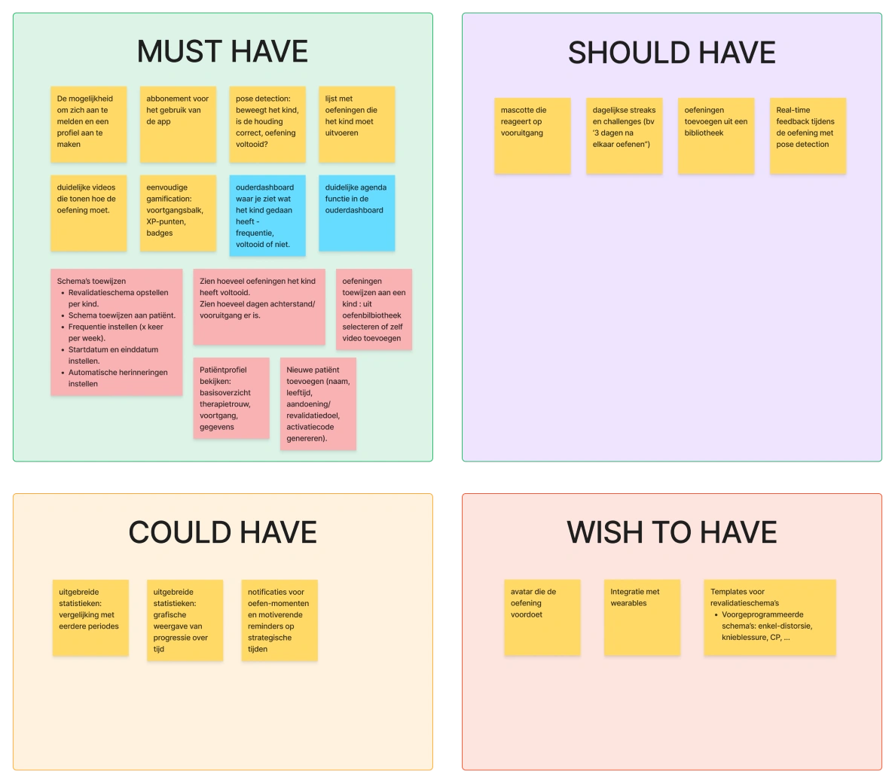
Based on our research insights, we mapped the interactions between the three main stakeholders:
Each stakeholder had different goals and information needs. This led to a platform structure that connected all three user journeys while keeping the child experience at the center of the product.
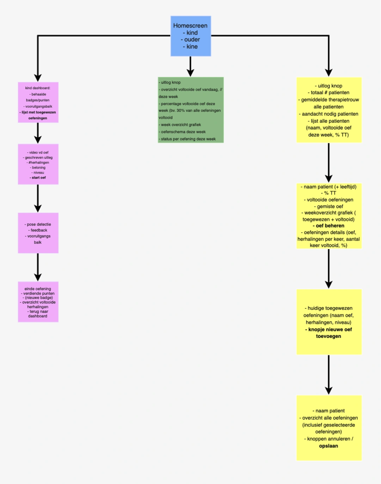
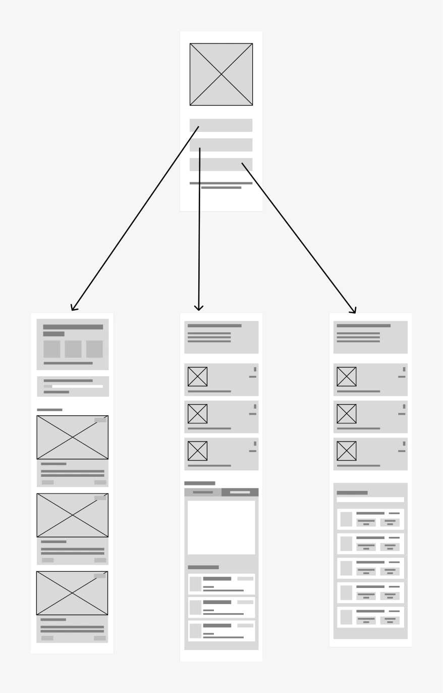
To address the challenges of motivation, parental involvement and therapist visibility, Nimbli combines gamification, AI-assisted exercise tracking and progress monitoring into one connected platform.
Children complete rehabilitation exercises through interactive challenges, rewards, badges, and progression systems.
The platform uses camera-based pose detection to verify movement and provide real-time feedback.
Parents can monitor progress, completed exercises, and upcoming tasks.
Physiotherapists can assign exercises, monitor adherence, and track patient progress remotely.
Before moving into high-fidelity design, we explored different interaction patterns and dashboard structures through wireframes. Special attention was given to simplifying exercise flows and reducing cognitive load for young users.
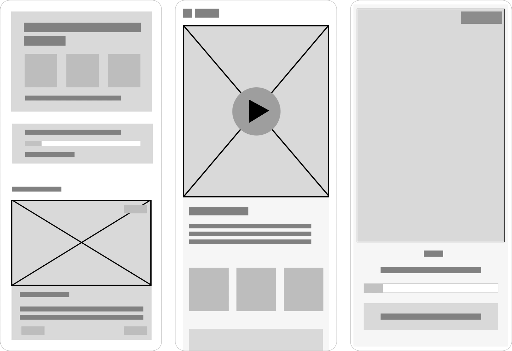
To make rehabilitation feel less clinical and more engaging, we developed a playful and approachable brand identity.
The visual language combines friendly illustrations, vibrant colors, and game-inspired elements to create a motivating experience for children while maintaining trust for parents and therapists.
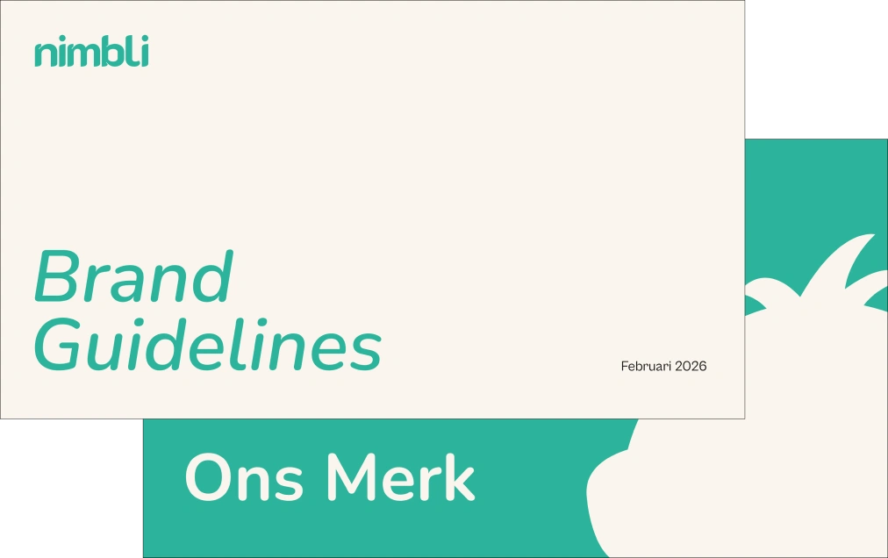
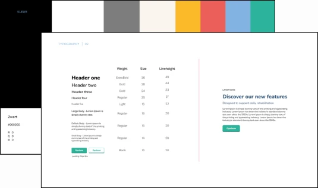
The final concept combines gamification, AI-assisted exercise tracking and progress monitoring into a single rehabilitation platform designed for children, parents and physiotherapists. Children are guided through engaging exercise challenges, receive rewards for completing activities and can track their progress over time. Parents gain better visibility into completed exercises and rehabilitation goals, while physiotherapists can remotely monitor adherence and adjust treatment plans when needed. By transforming repetitive rehabilitation exercises into a more interactive and rewarding experience, Nimbli aims to increase motivation, improve consistency and strengthen communication between all stakeholders involved in the recovery process.
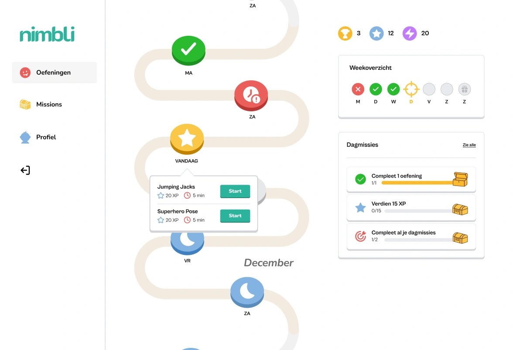
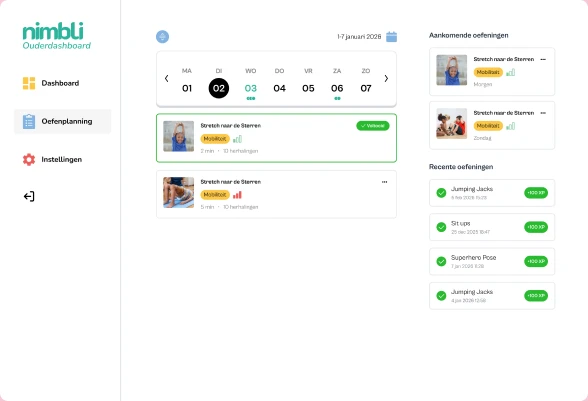
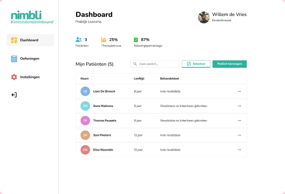
Zuiderbad